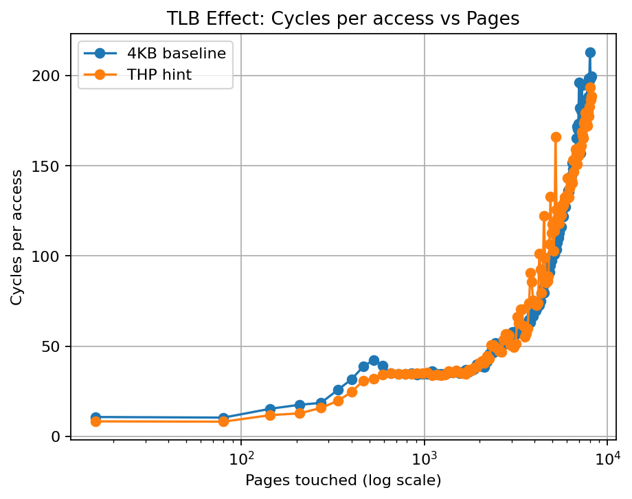
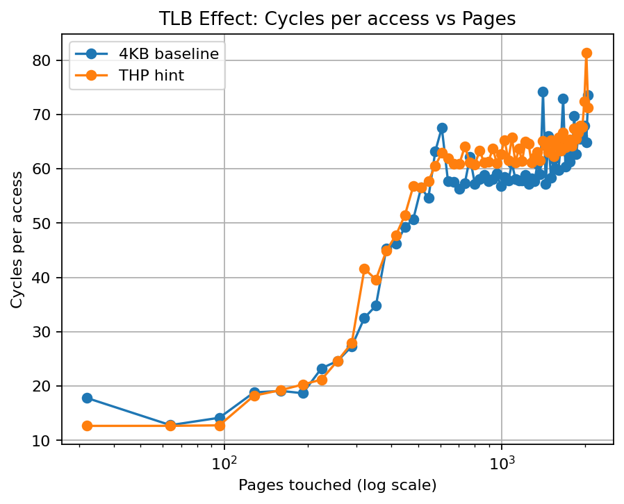

02-tlb-effect¶
Modern CPUs use virtual memory, which means every memory access requires a translation from a virtual address to a physical address.
To make this translation fast, CPUs include a hardware cache called the Translation Lookaside Buffer (TLB).
This lab explores how TLB capacity affects memory access latency.
Experiment Setup¶
We measure the latency of memory accesses while increasing the number of distinct pages touched.
To avoid hardware prefetch effects, the experiment uses pointer chasing, where each memory access depends on the result of the previous one:
p = *p;
This creates a strict dependency chain and forces the CPU to perform address translation for every access.
Large Working Set Sweep¶
First, we sweep a large range of pages.
CPU=1
MAX_PAGES=8192
STEP_PAGES=64
ITERS=5000000
WARMUP=500000
Maximum working set size:
8192 pages × 4KB ≈ 32MB
Result¶

Observed latency:
baseline latency ≈ 10.7 cycles
max latency ≈ 213 cycles
slowdown ≈ 20×
Interpretation¶
The final latency (~200 cycles) is close to typical DRAM latency.
This indicates that the experiment eventually reaches the point where memory accesses require:
TLB miss
+ cache miss
+ DRAM access
Thus, the knee observed in this configuration reflects the memory hierarchy transition, not purely the TLB capacity.
TLB Window Sweep¶
To isolate the TLB effect, we restrict the working set to a smaller range.
CPU=1
MIN_PAGES=32
MAX_PAGES=2048
STEP_PAGES=32
ITERS=15000000
WARMUP=1000000
Working set range:
32 pages → 2048 pages
128KB → 8MB
This keeps most accesses within the CPU cache hierarchy.
Result¶

Measured values:
knee pages ≈ 1408
knee size ≈ 5.5MB
baseline latency ≈ 17.8 cycles
max latency ≈ 74 cycles
slowdown ≈ 4.2×
TLB Reach¶
The effective coverage of a TLB can be estimated as:
TLB Reach = TLB Entries × Page Size
For example:
STLB entries ≈ 1500
page size = 4KB
Coverage:
1500 × 4KB ≈ 6MB
Our measured coverage:
1408 × 4KB ≈ 5.5MB
This closely matches the expected capacity of the second-level TLB (STLB) on modern x86 processors.
TLB Architecture¶
A simplified TLB hierarchy:
Virtual Address
│
▼
+------------------+
| L1 Data TLB |
| (~64 entries) |
+------------------+
│ miss
▼
+------------------+
| L2 TLB (STLB) |
| (~1500 entries) |
+------------------+
│ miss
▼
+------------------+
| Page Table Walk |
| (memory access) |
+------------------+
│
▼
Physical Address
The L1 TLB is small but extremely fast, while the second-level TLB provides a much larger coverage.
If both levels miss, the CPU must perform a page table walk, which requires multiple memory accesses.
Why Pointer Chasing¶
Modern CPUs contain hardware prefetchers that attempt to predict future memory accesses.
If we used a simple loop:
for (i = 0; i < N; i++)
sum += array[i * stride];
the hardware prefetcher might preload data and hide latency.
Pointer chasing avoids this problem:
p = *p;
Each access depends on the previous one:
access(i+1) depends on access(i)
This prevents the CPU from issuing memory requests in parallel and exposes the true latency of each memory access.
Conclusion¶
This experiment demonstrates that memory performance depends not only on cache locality but also on address translation locality.
The large working set sweep reveals the dramatic slowdown when accesses reach DRAM latency (~200 cycles).
By restricting the working set, the TLB window sweep captures the TLB capacity effect, showing a clear knee around 5.5MB, consistent with the expected coverage of the second-level TLB.
Even when data fits within the cache hierarchy, exceeding the TLB capacity can still introduce significant performance penalties.